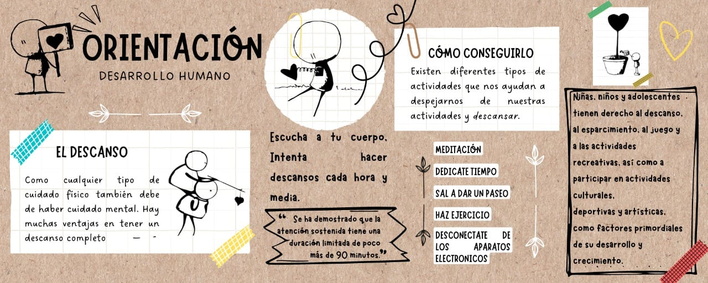

Ir por el desarrollo humano de los estudiantes es sinónimo de productividad. Esto es debido a que estarán más capacitados, serán más profesionales y, lo más importante, tendrán las herramientas necesarias para que, con sus acciones, puedan hacer que progrese un país entero.
Es importante tener sana relación con uno mismo. Si la salud física es necesaria para vivir bien, la salud mental no se queda atras, también es bastante necesaria. Gracias a tener una buena salud mental podemos desarrollarnos de manera más productiva y con más motivación. Aquí te mostramos una imagen con informacion de lo que es la salud mental y su importancia en nuestra vida.
Los Talleres de Desarrollo Humano, son una estrategia grupal para promover la reflexión personal sobre temáticas que pueden impactar en el rendimiento académico de el estudiantado.
• TALLER DE AUTOESTIMA
• TALLER DE COMUNICACIÓN
• TALLER DE EMOCIONES
Prevención: Campañas de prevención temporales y permanentes dentro de las instalaciones del Centro a cerca de problemáticas de actualidad así como de mayor recurrencia dentro de nuestra comunidad.
Atención psicológica: Servicio de acompañamiento, orientación o asesorías psicológicas, de manera individual o grupal. Trabajando con el modelo de terapia breve el cual propone 6 sesiones como máximo.
Capacitación: Impartición de talleres, cursos.
Conflicto, discusión y cambio ocurren de manera natural en nuestras vidas, como también en las vidas de organizaciones, comunidades y naciones. La habilidad de encontrar una solución pacífica a desacuerdos a través de la resolución de conflictos es una habilidad que todos necesitamos para crear una sociedad pacífica y productiva.
Entendiendo el conflicto Comunicación con la oposición Lluvia de ideas para posibles soluciones Eligiendo la mejor solución Usando a un tercero como mediador Explorando las alternativas Manejando situaciones estresantes y tácticas de presión
DIRECTORIO DE APOYOS EXTERNOS
• La Línea Nacional de Prevención del Suicidio al 1-888-628-9454. Su llamada es confidencial y lo atenderán en español.
• Para obtener información sobre tratamientos de la Administración de Servicios de Abuso de Sustancias y Salud Mental, llame al 1-800-662-4357.
• Si necesita apoyo luego de un desastre o emergencia llame al 1-800-985-5990.